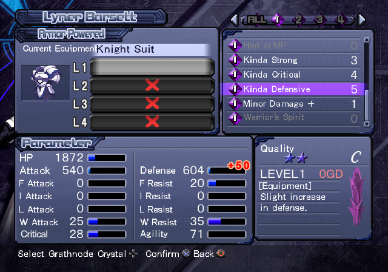

Party Builds & Ultimate Gear
Endgame builds revolve around high-rank グラスメルク equipment paired with Rank A/S グラスノ結晶. Vanguards maximize attack count and SPD to push ハーモニクス rapidly, while backline レーヴァテイル stack burst multipliers or MP cost reduction.
Roster Setup
Core Building Rule · Special Grade Double Value
Socket +スペシャルグレイド alongside stat crystals on any multi-slot ultimate weapon or dress to double base parameters. Pair one frontline Vanguard carrying 防具トーフ化！ and 武器アワ化！ to strip boss defenses while building ハーモニクス.

Vanguard Characters (Frontline)
-
Acquire KANADE or エオリアの小夜曲. Unlock the sealed security door inside 天覇研究所 or craft KANADE via late-game Sword recipes.
-
Install Speed and Debuff グラスノ結晶 on Lyner. Prioritize 極限スピード, 大破壊, and 全能の力 so Lyner cycles turns quickly and sustains front-row Sync.
-
Craft Jの憂鬱 via Chain 4 recipe. Boosts HP, ATK, DEF, Critical rate, SPD, and elemental resistances in one slot-rich package.
-
Equip 極限スピード and スペシャルグレイド. Multiplies her already high SPD and resistance bonuses to turn Krusche into an unkillable meter battery.
-
Craft ヴァストラッド in Silver Horn era. Let ライナー name the final firearm グラスメルク synthesis to obtain ヴァストラッド, adding high ATK and fire power.
-
Install 防具トーフ化！ and Critical crystals. Jack's multi-hit barrage applies グラスノ結晶 status effects reliably on bosses within his first two turns.
-
Synthesize ドゥームスレイヤー. Combine recipes found around シルヴァホルン for extreme HP, ATK, and critical output, then patch his negative fire resistance with armor crystals.
-
Stack Guard, HP, and 武器アワ化！. Turning Radolf into an aggressive tank keeps Phase 3 multi-target magic attacks off your singer.
-
Craft 絶影 for Phase 2/3 speed builds. Gives high critical strikes and rapid turn cycling immediately after he joins your frontline.
-
Keep swappable Backup Crystals ready. Avoid permanently locking irreplaceable Rank S crystals onto Ayatane prior to Phase 3 climax scenes unless unequipping them in town first.
Reyvateils (Backline Singers)
-
Equip オペレッタ armor. Obtain and recrystallize high-tier dresses including Ar Tonelicard SP G drops for maximum crystal slots.
-
Install 禁断のメロディ and コスモダイヤ. Doubles Red spell damage while cutting ongoing chant MP drain during multi-wave boss fights.
-
Equip オペレッタ or high-MP robe. Ensure at least four crystal sockets so burst scaling and speed passives stack simultaneously.
-
Combine 禁断のメロディ with burst Charge SPD. Reaching 1000%+ on her endgame Red songs clears tough Phase 3 encounters in one discharge.

-
Claim 大皇冠 in Dragon's Nest. Her signature dress grants sweeping stat peaks and all-element resistance far exceeding standard Reyvateil equipment.
-
Socket スペシャルグレイド and 全能の力. Multiplying 大皇冠 makes Shurelia virtually impervious to Phase 3 burst interrupts.
Top Grathnode Crystals Reference
| Crystal Name | Primary Effect | Best Role |
|---|---|---|
| スペシャルグレイド | Doubles base equipment parameters (+100%) | Every Vanguard & 大皇冠 |
| 極限スピード | Massive SPD boost (craft via 絶影 line) | All Active Vanguards |
| 禁断のメロディ | +100% Red 詩魔法 power | オリカ / ミシャ |
| コスモダイヤ | Sharply cuts Red MP consumption | Long Phase 3 Boss Encounters |
| 防具トーフ化！ | Halves target enemy DEF on attack | Multi-hit Vanguards |
| 武器アワ化！ | Reduces target enemy ATK on hit | ラードルフ / クルシェ |
| 全能の力 | Broad increase across all core stats | General Endgame Multiplier |